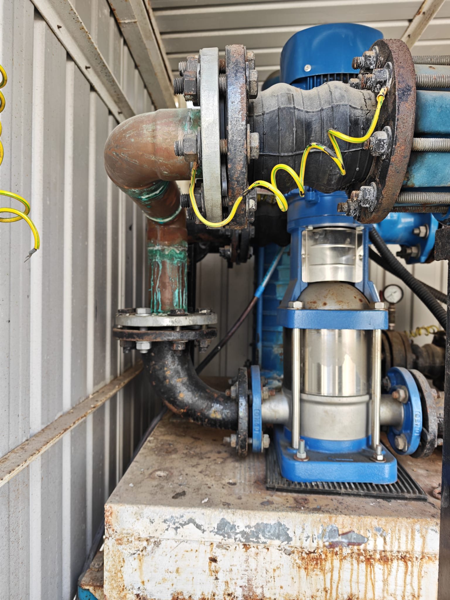
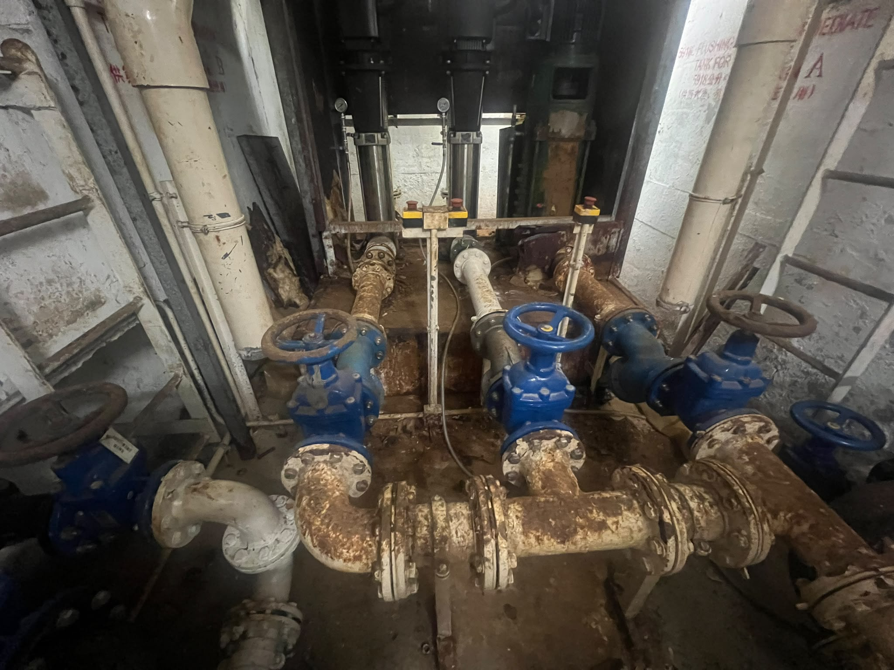
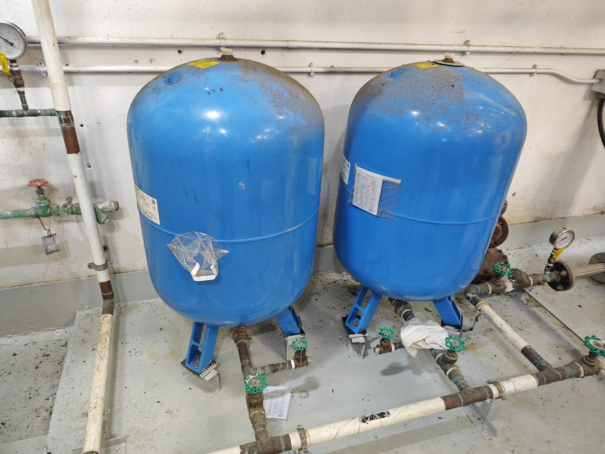

政府註冊電業承辦商 · 專業水務泵房改善及壓力缸維修檢測

食水泵更換及水管軟接頭防震組裝工程

大型住宅屋苑水泵房供水泵更換工程

雙氣壓食水壓力缸更換及壓力閥調校工程
| 工程年份 | 項目地點 / 機構名稱 | 工程內容撮要 | 狀態 |
|---|---|---|---|
| 2026 年 | 香港大學 (羅理基閣) | 食水泵更換及管道防震組裝工程 | 已竣工 |
| 2026 年 | 帝峯皇殿 (The Hermitage) | 屋苑水泵房核心供水泵更換工程 | 已竣工 |
| 2026 年 | 香港大學 (泵房設施) | 雙氣壓食水壓力缸更換及壓力閥調校 | 已竣工 |
| 2026 年 | 華盛邨公廁 / 錫降圍公廁 | 水務系統泵房改善與水泵更換工程 | 已竣工 |